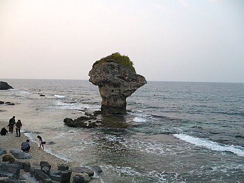
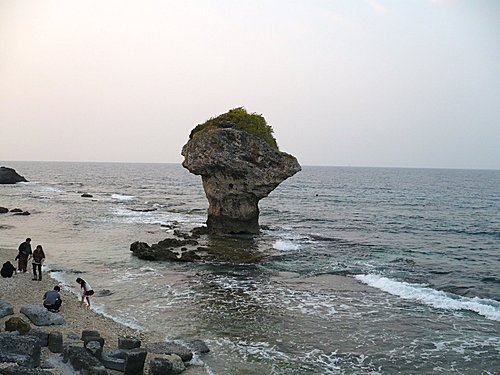
（小琉球的地標，花瓶岩）
................................
眾人西遊小琉球，
閒雲陽暖踩風輕。
孤石遠影碧空盡，
笑談江河海自流。
─────改自李白詩
Time：12.12.9 am
Place：office大門口集合
Who:英俊瀟灑、年輕美麗、天真無邪、認真率性的車友及家眷們
How：上國道一號→台88快速道路往東港→右轉台27道→東港渡輪站→搭船至小琉球→午餐→逆時針環島→搭船返東港→晚餐→回溫暖的家
到小琉球騎單車一事，我們期待了很久，好不容易選定日子，更難得的是，今天是冬天裡最sunny的好日子，感覺就是這麼棒！
抵達東港渡輪站，社長超哥統一購買船票及張羅午餐，這次一日遊大人自費約600元。
連車帶人搭船的要在渡輪站外面另一條走道進入，等待中又再檢查愛車狀況。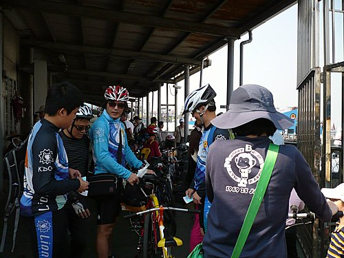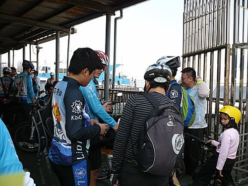
隊友的車總是很整齊排列 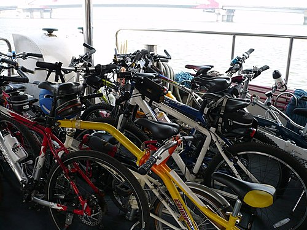
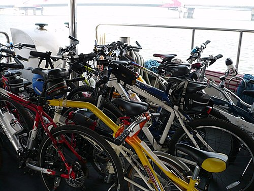
東港地標─紅色陸橋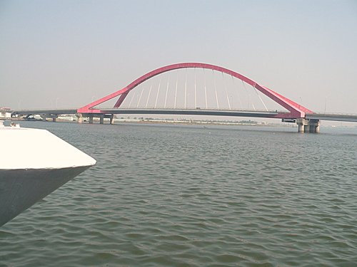
到了小琉球，第一站是美人洞，再往前有度假區，我們在此午餐、看海。
綠地碧海藍天，真是外國人的最愛了！ 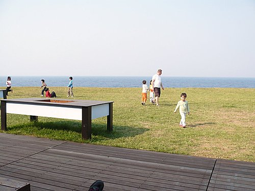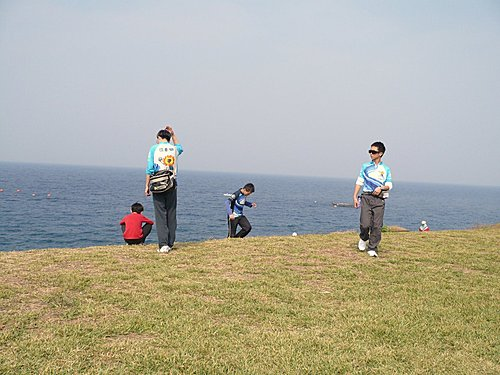
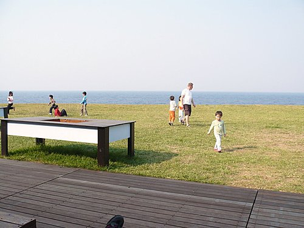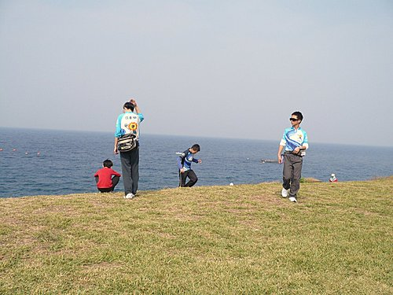
餐廳外可以泡茶、聊天、日光浴。 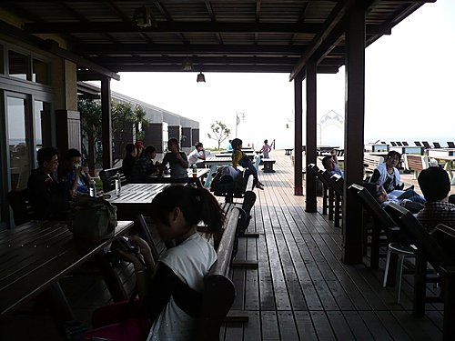
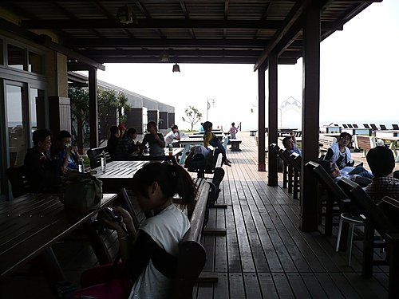
左邊有藝術鐘，每個人都想跳上去敲一下。 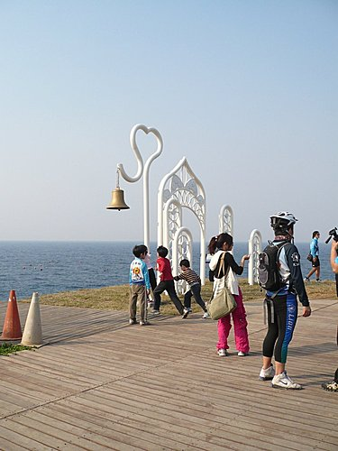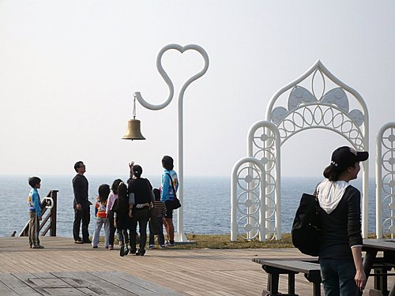
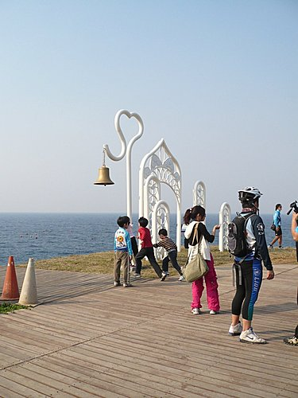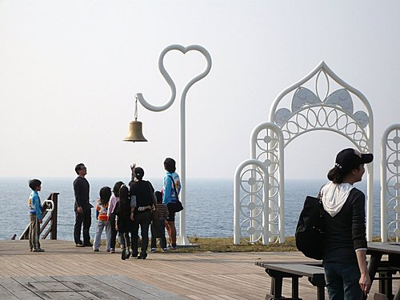
繼續往前，
就在涼亭上休息吧！
遠方是高雄的位置，下方是白淨美麗的貝殻沙灘。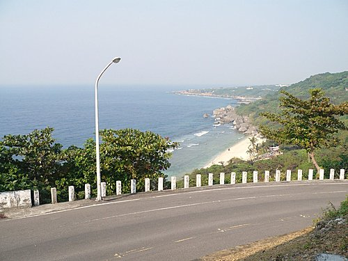
看夕陽的地方，落日亭。 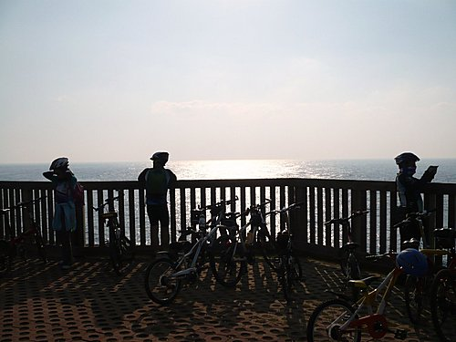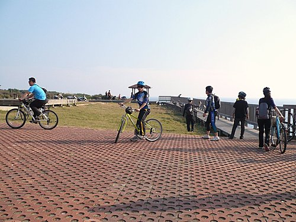
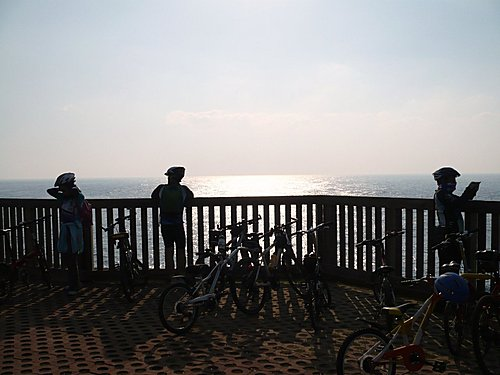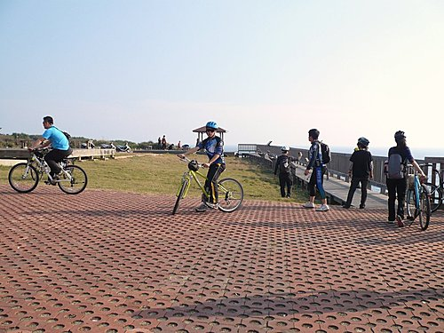
突然跑來二隻羊咩咩，不慌不忙，從容大方，一直嗅著車子。 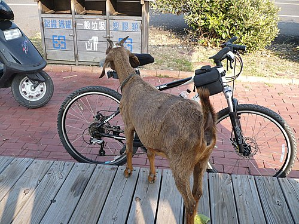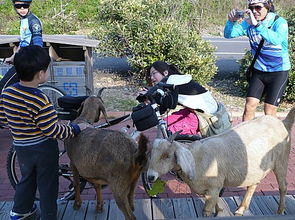
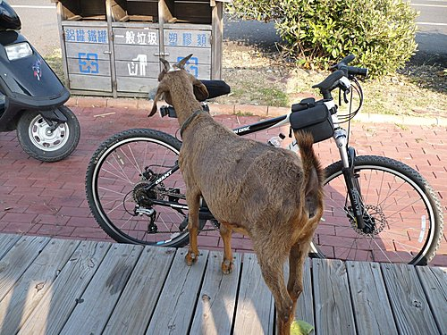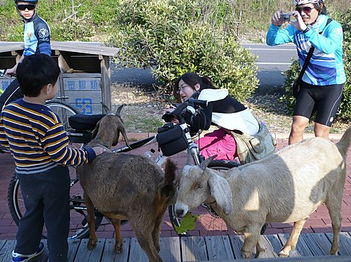
看太陽出來的地方，旭日亭。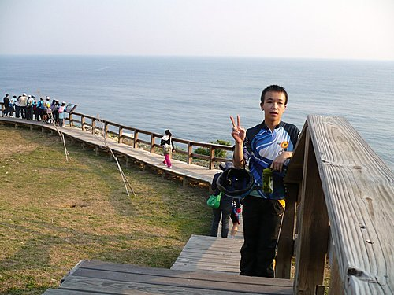
一路上經過厚石裙礁、望海觀音石、爬山虎.....（族繁不及備載）
環島最後一站，
渡輪站附近的中澳沙灘。
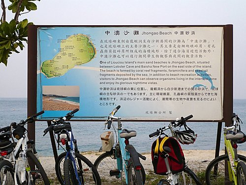
沙灘真是又白又乾淨啊！可以走到海邊玩一下水。
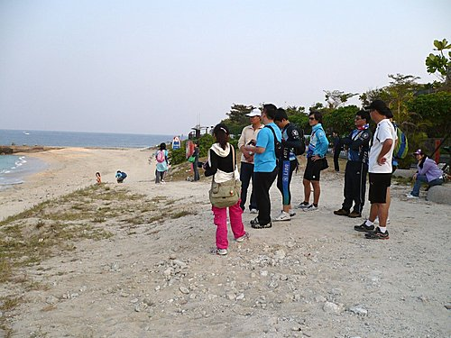
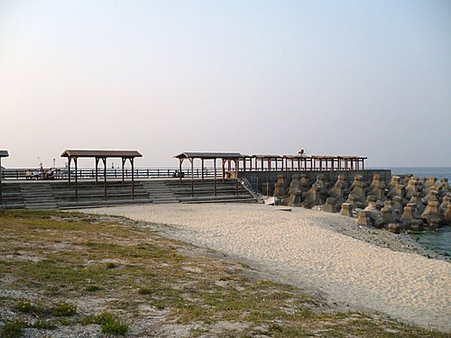
小琉球真是生態豐富，值得探訪的好地方！
到海邊一遊，除了垃圾，什麼也不要拿走，讓美麗的土地再給後代子孫讚美與使用吧！
【附記】此行大部分的人對小琉球並不很熟悉，但很幸運的，有當地友人帶領與介紹，讓我們進一步瞭解其中奧妙，真是謝謝他們了！
恭賀 本次活動，刷新河東獅歷年完成環島之旅的人數紀錄